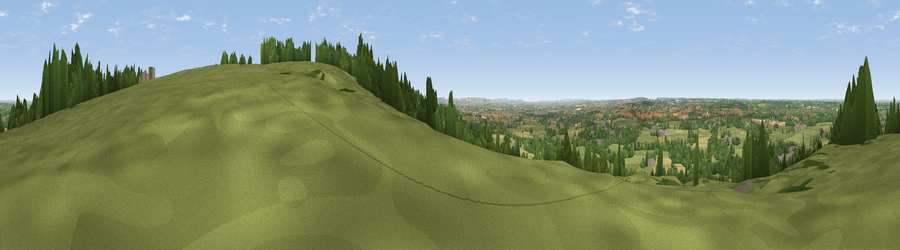

Viewpoint near Bowden Hill
#10734 in England · top 16% of its area beats it · near Bowden HillThe view, rendered

A 360° render of this exact spot computed from the terrain model, tree cover and land cover — summer colours, afternoon light, calibrated against photographs of famous viewpoints. Real trees, hedges and buildings will differ in detail.
The panorama
Grey silhouette: terrain skyline in each direction (720 bearings, Earth curvature and refraction included). Dashed green: skyline with trees (+15 m) and buildings (+8 m) as obstacles. Blue strip: how far the ground is visible on each bearing.
Where the view opens
Wedge length = distance to the farthest visible ground on that bearing (vegetation-aware). Rings at 10, 25 and 50 km.
What fills the view
44% grassland · 30% woodland · 21% cropland · 4% built-up
Angular shares of the visible panorama (visual magnitude), not map area. Landscape diversity 0.51 (0–1 Shannon).
Key numbers
More beautiful places nearby
The staircase of upgrades: each row has a higher view potential than everything closer. Driving times are estimates from straight-line distance, calibrated against real road routing — check an actual route before setting out.
| Place | Direction | Drive | Score |
|---|---|---|---|
| Viewpoint near Heddington | ESE · 7 km | ~15 min | 71.2 |
| Viewpoint near Heddington | SE · 8 km | ~16 min | 73.0 |
| King's Play Hill | ESE · 8 km | ~17 min | 73.9 |
| Morgan's Hill | ESE · 10 km | ~19 min | 74.3 |
| Viewpoint near Allington | ESE · 15 km | ~27 min | 75.6 |
| Hanging Hill | W · 22 km | ~37 min | 76.4 |
| Martinsell viewpoint | ESE · 25 km | ~41 min | 77.3 |
| Viewpoint near Stinchcombe | NW · 35 km | ~53 min | 80.5 |
51.42245, -2.09667 · source: screening · position refined by local search. Computed location — check access rights before visiting.